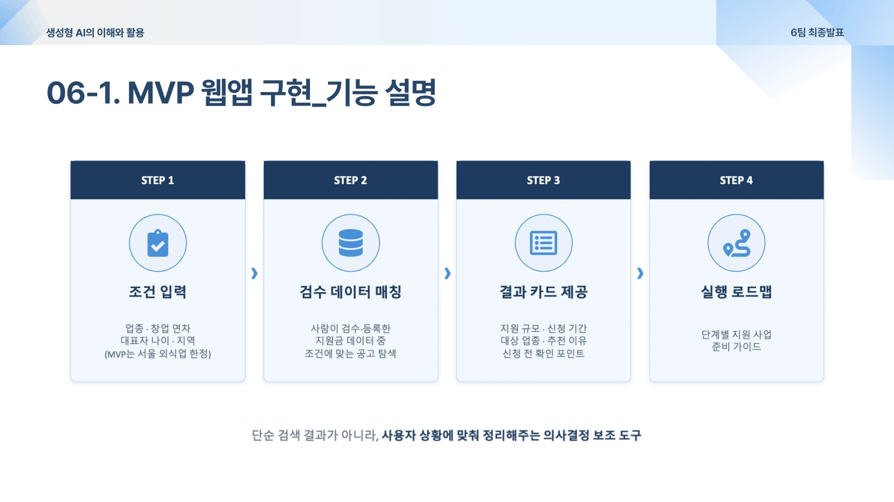
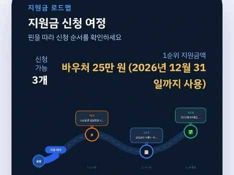

PROJECT 06 / 공공데이터 · 맞춤 추천PROJECT 06 / Public Data · Personalized Recommendation
GRAP: 소상공인 맞춤형 지원금 가이드GRAP: Personalized Subsidy Guide for Small Business Owners
매장 조건으로 지원사업을 좁히고, 공고를 짧은 설명과 신청 로드맵으로 바꿨습니다.Narrowed down support programs by store conditions and turned announcements into short descriptions and application roadmaps.
01 문제 상황 Problem
소상공인 지원사업은 여러 곳에 흩어져 있고 공고문도 길어, 자신의 매장이 대상인지와 무엇부터 준비해야 하는지 파악하기 어렵습니다. 사업 조건 확인과 신청 준비의 부담을 낮추는 가이드를 기획했습니다.Small-business support programs are scattered across many sources and their announcements are long, making it hard to tell whether a given store is eligible and what to prepare first. The project designed a guide to reduce the burden of checking eligibility and preparing applications.
02 사용 모델과 데이터 Models and Data
모델·기술Models · Techniques
- Gemini: 지원사업 공고를 쉬운 말로 요약하고 안내 문장을 생성합니다.Gemini: summarizes support program announcements in plain language and generates guidance text.
- 사용자 조건 기반 필터링: 대상 조건에 맞는 사업을 먼저 좁힌 뒤 AI 설명을 제공합니다.Filtering by user conditions: first narrows down programs matching the eligibility criteria, then provides an AI explanation.
데이터·입력Data · Inputs
- 기업마당 API의 공고 정보와 직접 확인해 정리한 핵심 지원사업 공고.Announcement data from the Bizinfo (Gieop Madang) API and key support program announcements manually verified and compiled.
- 업종·연령·업력·지역 등 매장 및 사업자 조건.Store and owner attributes such as industry, age, years in business, and region.
03 구현 과정 Implementation
- 네 단계의 입력 화면으로 매장 조건을 수집합니다.Collects store conditions through a four-step input screen.
- 지원사업의 자격 조건과 사용자 조건을 비교해 후보를 추립니다.Compares program eligibility requirements with the user's conditions to shortlist candidates.
- 공고를 2~3문장으로 요약하고 마감일·준비 단계 중심의 신청 로드맵으로 연결합니다.Summarizes each announcement in two to three sentences and links it to an application roadmap centered on deadlines and preparation steps.

04 핵심 결과 Key Results
- Next.js·Supabase 기반의 맞춤 공고 탐색, 요약, 로드맵 MVP를 구현했습니다.Implemented an MVP on Next.js and Supabase for personalized announcement search, summaries, and roadmaps.
- 실제 공고에 근거한 추천과 짧은 설명으로 긴 공공문서를 읽는 부담을 줄이는 방향을 제시했습니다.Proposed reducing the burden of reading long public documents through recommendations grounded in actual announcements and brief explanations.

05 한계와 발전 방향 Limitations and Next Steps
- 초기 MVP는 서울 외식업 중심으로 범위가 제한적이며, 추천 자격의 정확도나 실제 지원금 선정 성과는 검증되지 않았습니다.The initial MVP is limited in scope, focusing on restaurants in Seoul, and neither the accuracy of eligibility recommendations nor actual subsidy award outcomes have been validated.
- 공고의 변경·마감과 개별 자격 요건을 최신 원문에서 확인하는 과정이 필요합니다. 수익 모델은 사업 계획 단계입니다.Changes, deadlines, and individual eligibility requirements still need to be checked against the latest original announcements. The revenue model is at the business planning stage.
자료: 사업계획서 및 발표자료. 제출 자료를 바탕으로 정리했으며, 결과는 해당 프로젝트의 구현·실험 범위에 해당합니다.Source: business plan and presentation slides. Compiled from the submitted materials; results apply to the implementation and experiment scope of this project.